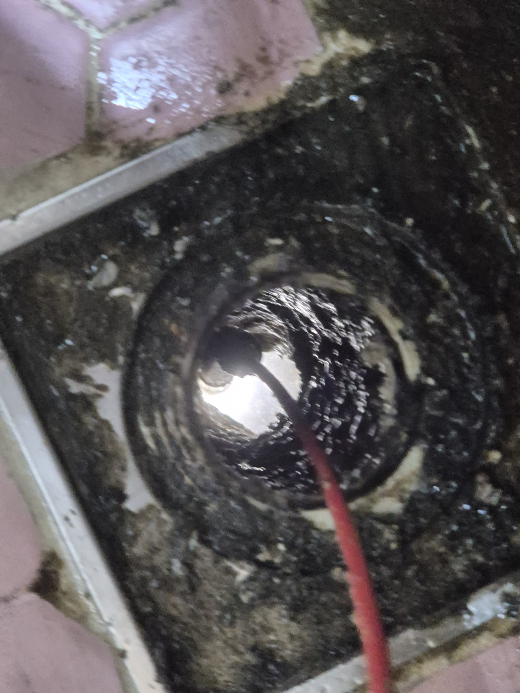
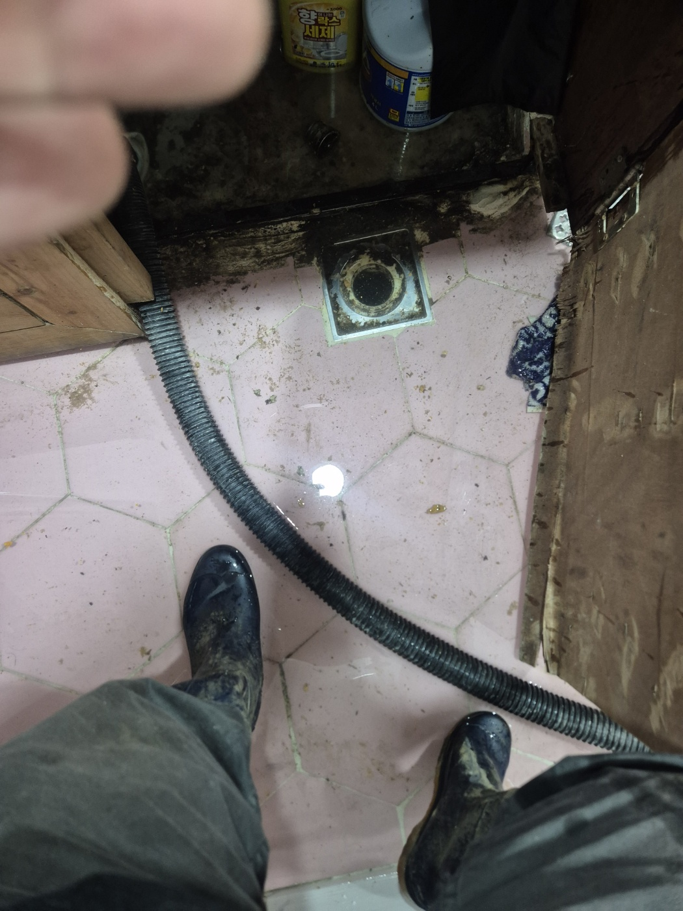
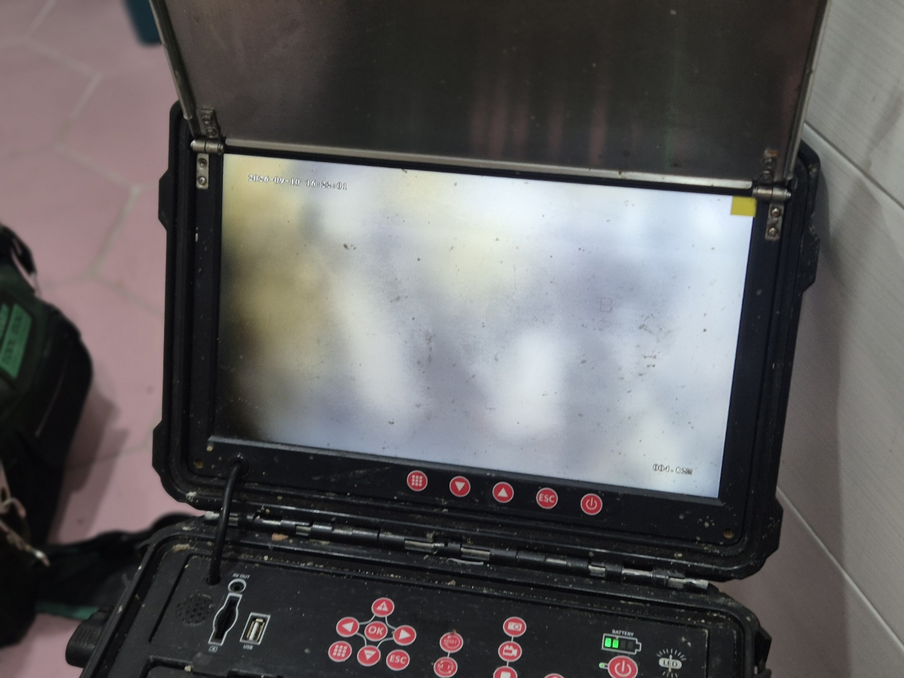
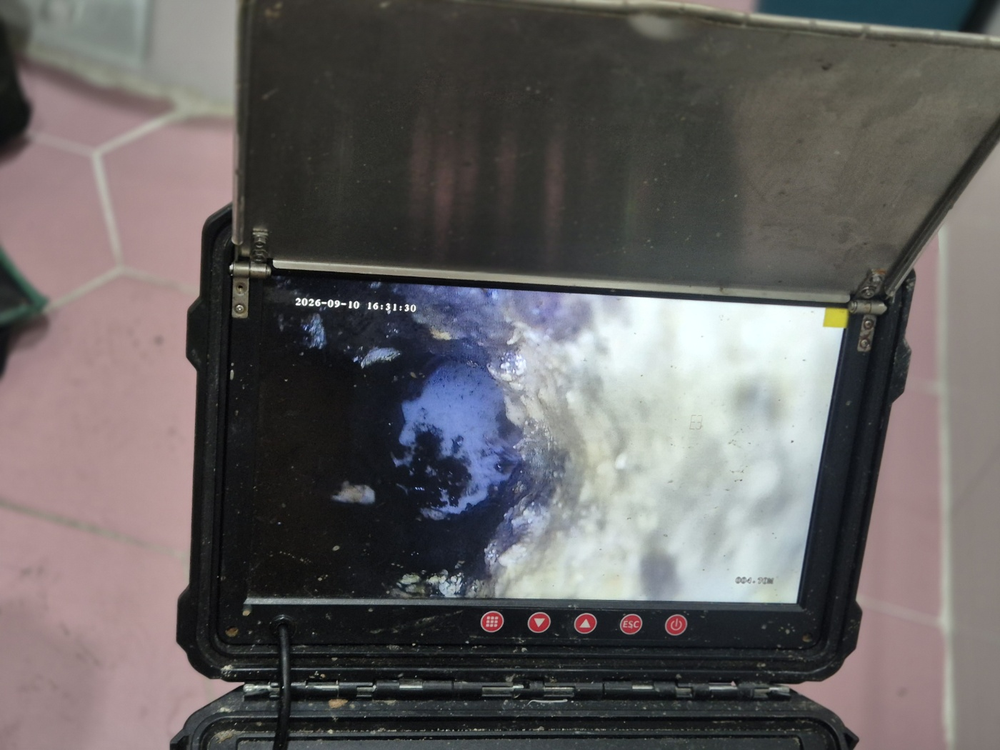
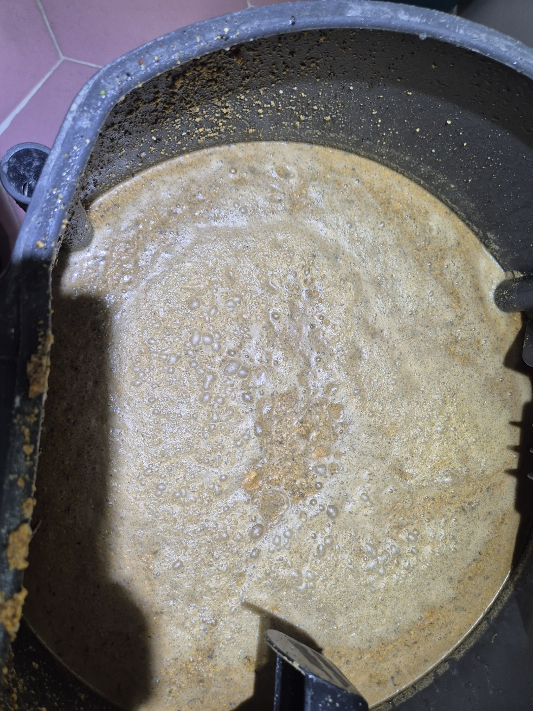
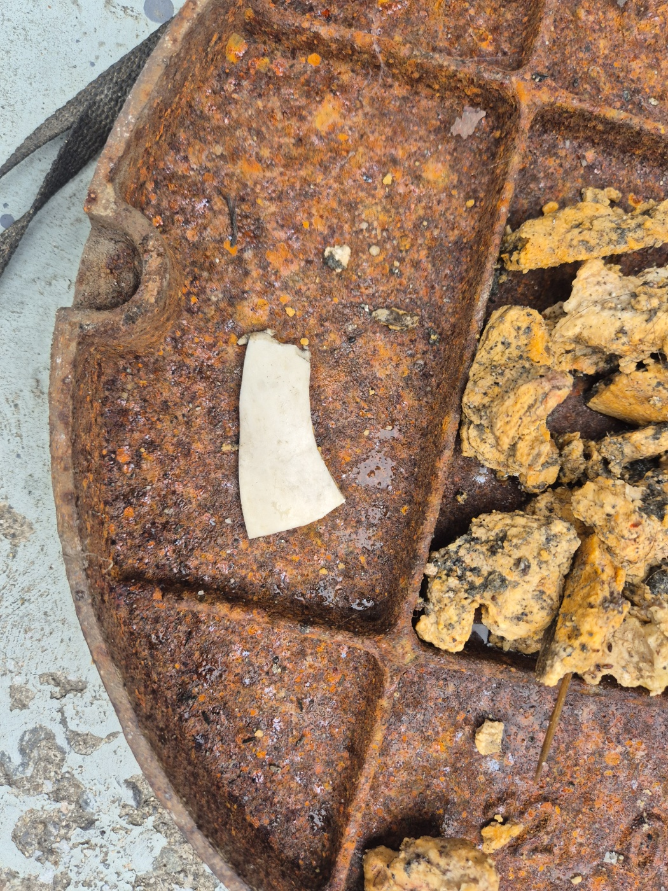

안녕하세요.. 고고고 설비입니다.. 오늘은 천안시 불당동에 있는 카페 겸 식당에서 하수구막힘 신고를 받고 다녀온 현장입니다. 주방 바닥 배수구가 역류해서 영업에 지장이 있다고 하셨고, 손님이 뜸한 시간에 맞춰 급하게 출동했어요.
주방 바닥 배수구 거름망을 열고 전동 와이어 케이블을 안쪽으로 밀어 넣었습니다. 장화를 신고 바닥에 고인 물을 밟아가며 작업해야 할 정도였어요.

내시경 카메라를 배관 안쪽으로 넣어보니 처음엔 화면이 뿌옇게 흐려질 정도였고, 조금 더 밀어 넣자 짙은 색 이물질이 배관 벽을 덮고 있는 게 보였습니다.


셕션 장비로 배관 안쪽 이물질을 빨아들이며 작업을 진행했습니다. 통 안에는 기름기 섞인 거품과 찌꺼기가 가득 모였어요.

작업을 마치고 나니 맨홀 뚜껑 위로 굳은 기름 덩어리와 플라스틱 조각까지 여러 이물질이 함께 걷혀 나왔습니다. 카페 특성상 커피 찌꺼기와 기름기가 함께 쌓인 것으로 보였어요.

작업을 마치고 물을 내려서 역류 없이 잘 빠지는 걸 최종 확인했습니다. 사장님도 영업 전에 끝낼 수 있어서 다행이라고 하셨어요. 카페나 식당 주방은 기름때와 찌꺼기가 섞여 쌓이기 쉬운 만큼, 거름망 관리와 정기적인 점검이 막힘 재발을 막는 데 도움이 됩니다.
고고고 설비는 주택, 아파트, 원룸, 상가, 공장의 생활 하수 오수 배관을 관리해 주는 업체입니다. 고고고 설비에 전화 주시면 친절상담 정확한 진단 확실한 해결로 보답해 드리겠습니다!!